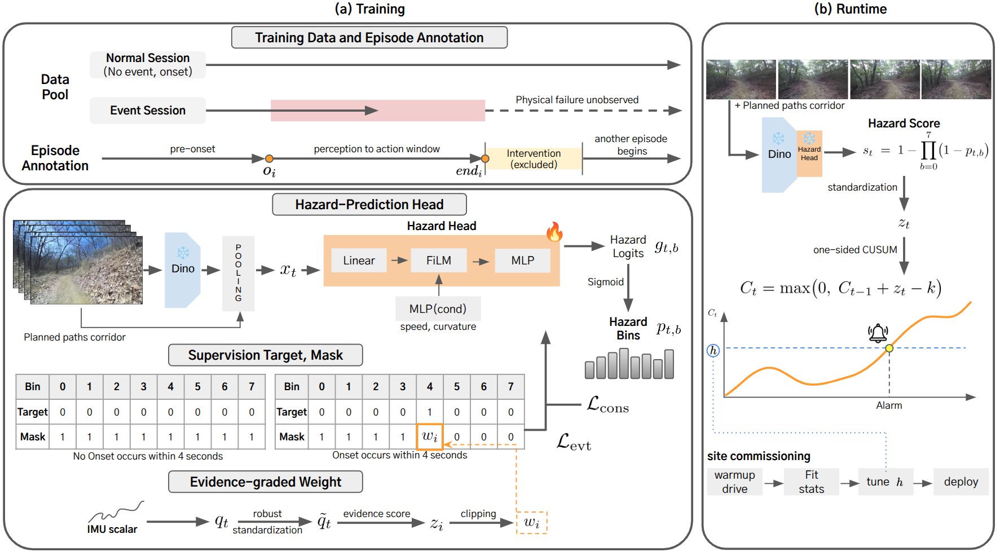
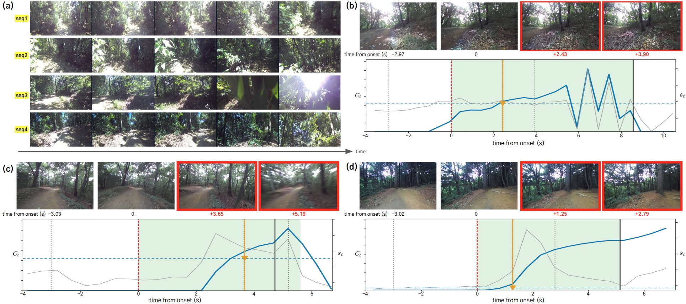
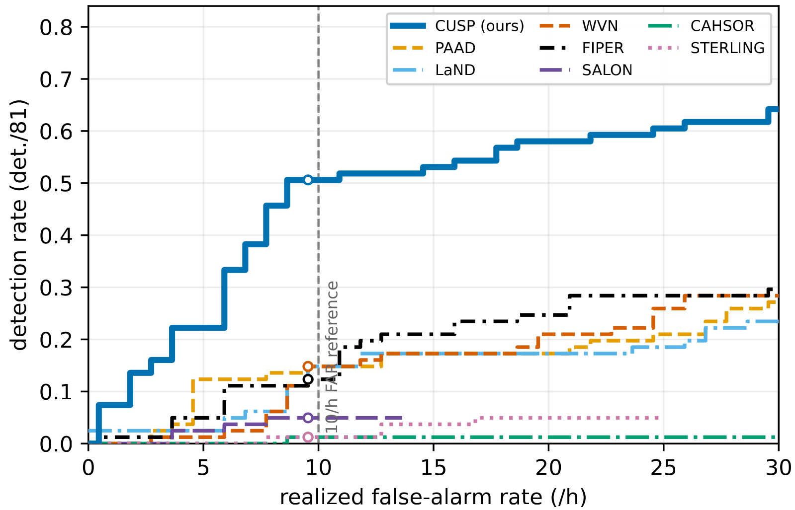

Abstract
Off-road navigation exposes a robot to potentially hazardous terrain en route. Although learning-based navigation uses safety supervision to choose which path to drive, it provides no runtime alarm when the robot following that path is heading into danger. Such an alarm must be learned from field logs, where human intervention preempts the failure and the failure itself is therefore never observed. The human judges driving unsafe early but typically intervenes only once failure is clearly near, so the intervention marks that judgment late. That earlier judgment is what a runtime alarm must detect, yet no prior intervention-supervised method has targeted it. To address this problem, we introduce CUSP (CUSUM-governed Survival model of the Perception onset), a model-agnostic runtime hazard alarm that learns this moment from intervention-terminated logs. "Cusp" is a word for the point at which one state is about to turn into another, and the moment we target is exactly such a cusp: the point at which safe driving turns unsafe in a human's judgment. We call this point the perception onset and annotate it separately from the intervention. A visual hazard head is trained on the annotated onset with a discrete-time survival objective so that driving with and without an onset both supervise the head, and a CUSUM accumulates the predicted onset risk into alarms. We evaluate CUSP at five unseen sites, two autonomous and three teleoperated, with 142 events and every method tuned to the same rate of ten false alarms per hour. CUSP detected 85 events compared to 26 for the best of nine adapted baselines, and the margin comes from hazards to which every signal in the navigation model is blind.
Method

Results
| Method | Detections / 142 (Sites I / II / III / IV / V) |
Margin > 0.5 / 1 / 2 s | C(+3) | Delay, median [IQR] (s) |
|---|---|---|---|---|
| Obstacle proximity | ||||
| NavDP | 3 (0/3/0/0/0) | 3 / 2 / 2 | 0.014 | +2.04 [1.8–5.7] |
| CARE | 10 (0/5/1/1/3) | 10 / 10 / 10 | 0.021 | +4.59 [1.7–5.7] |
| Plan / policy-conditioned | ||||
| LaND | 12 (0/0/3/3/6) | 11 / 11 / 10 | 0.049 | +2.58 [1.4–3.8] |
| FIPER | 21 (1/10/6/0/4) | 19 / 16 / 12 | 0.028 | +5.24 [3.2–8.4] |
| PAAD | 26 (0/14/3/1/8) | 25 / 22 / 19 | 0.056 | +5.13 [2.8–7.7] |
| Traversability | ||||
| STERLING | 7 (1/5/0/1/0) | 7 / 6 / 5 | 0.000 | +5.21 [4.4–6.0] |
| CAHSOR | 9 (2/6/1/0/0) | 8 / 7 / 6 | 0.014 | +5.60 [3.4–9.4] |
| SALON | 24 (0/20/2/2/0) | 19 / 17 / 13 | 0.028 | +4.69 [3.2–8.4] |
| WVN | 26 (1/16/2/3/4) | 21 / 20 / 17 | 0.063 | +5.00 [2.5–7.4] |
| Ours | ||||
| CUSP (intervention label) | 34 (3/17/8/4/2) | 34 / 32 / 24 | 0.127 | +2.91 [1.6–5.4] |
| CUSP (ours) | 85 (4/40/16/4/21) | 77 / 72 / 64 | 0.218 | +3.72 [1.9–6.5] |
Five-site results under a common 10/h false-alarm budget (142 events: 11 / 50 / 28 / 13 / 40 at Sites I–V). Detections: events with an alarm inside the perception-to-action window [oi, end]. Margin: detections whose alarm precedes the intervention by more than 0.5 / 1 / 2 s. C(+3): fraction of all events alarmed within 3 s of the onset. Delay: alarm time minus onset over detected events. Each baseline is reported at its best configuration (CUSUM with k ∈ {1, 2, 3} or the instantaneous rule). Table II of the paper.


Real-world Experiments
Alarm examples from the held-out sites, grouped by site. Each clip shows the left ZED 2i image with the committed path, the per-frame score st and the CUSUM statistic Ct against the threshold h, the onset and the intervention, and the alarm times of CUSP and the three strongest baselines (PAAD, WVN, SALON). Site II is driven autonomously by NoMaD with CUSP attached as an alarm; Sites III–V are teleoperated.
BibTeX
@article{kang2026cusp,
title = {CUSP: CUSUM-Governed Survival Hazard Alarms at the Perception Onset for Off-Road Navigation},
author = {Kang, Inuk and Seo, Seung-Woo},
journal = {arXiv preprint arXiv:2610.07882},
year = {2026},
eprint = {2610.07882},
archivePrefix = {arXiv},
primaryClass = {cs.RO},
url = {https://arxiv.org/abs/2610.07882}
}